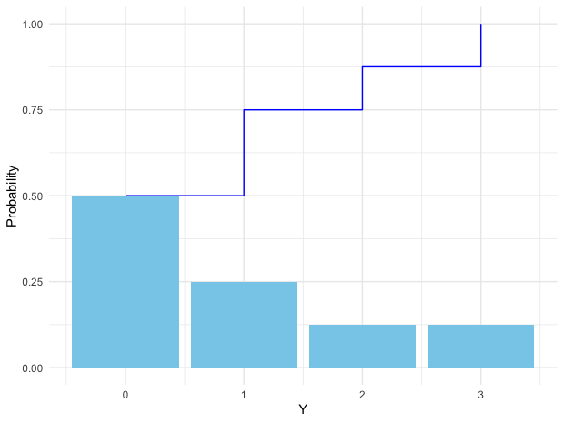
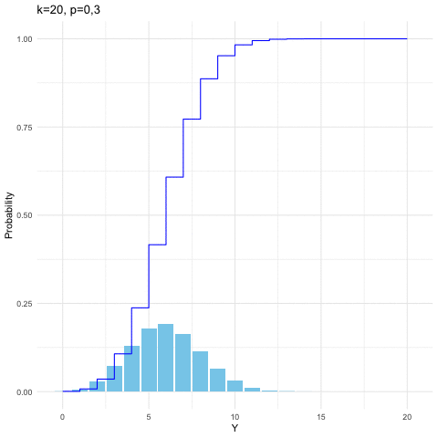
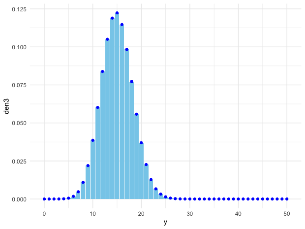
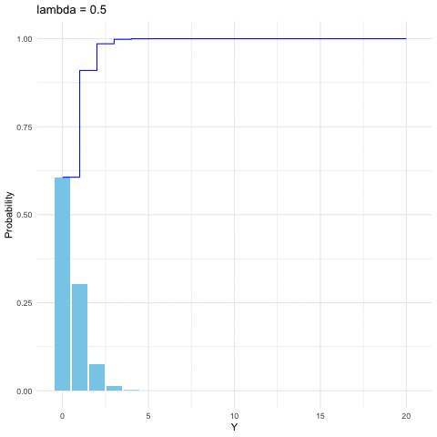
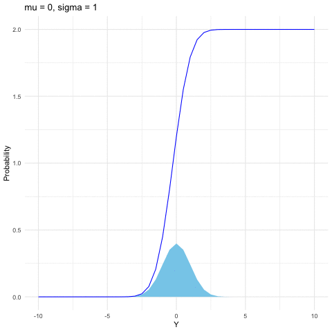
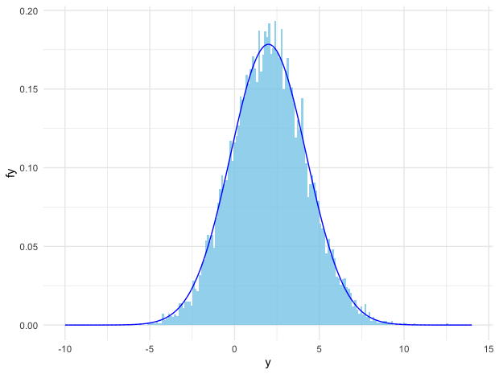
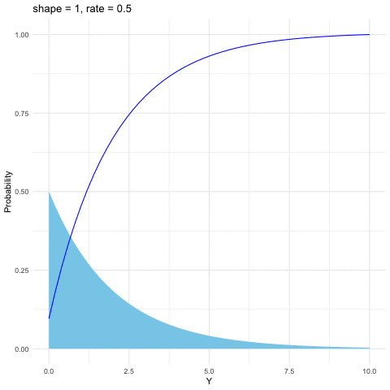
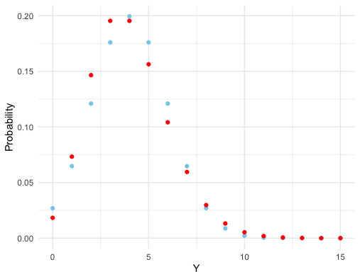
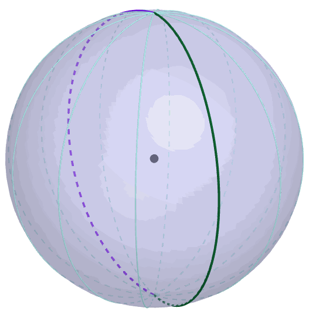
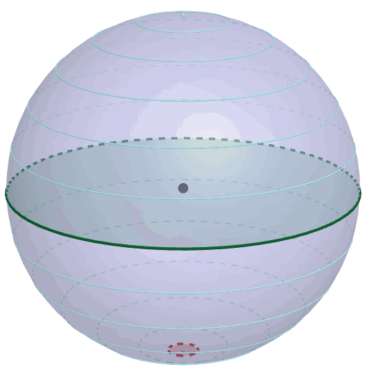

In history, perhaps ironically, the concepts of randomness, expectation, and probability were systematically formed together with the emergence of mechanical determinism. The studies of gamblings, lotteries, and dices in the 17th century contributed to the understanding of the tendency to produce stable relative frequencies. The economic needs, for example, actuarial competencies for insurance and annuities, were also in response to the demand for a special calculus to govern the nations under the economic uncertainty.
Also, in the 17th century, Blaise Pascal extended the scope of probability theory from the secular games of chance to the epistemology. Pascal gave some game-theoretic considerations that concern belief in God, which is known as Pascal’s wager (le pari de Pascal), and which also marked the initiative of decision theory, a theory of deciding what to do when it is uncertain what will happen.
Pascal’s wager of God can be summarized by the four possibilities listed in the following table:
| Worship | Existence | Non-existence |
|---|---|---|
| Belief | infinite gain | finite loss |
| Disbelief | infinite loss | finite gain |
According to this table, belief in God is better off, a dominating pay-off amongst the four, thus Pascal advocated the belief. He transferred the structure of reasoning about games of chance to the inference that is not founded on any chance set-up but on two possible states of faith.
Nowadays, Pascal’s wager is not considered as a convincing argument.120 One major suspicion (proposed by William James) is that a person who becomes a believers for the reasons urged by Pascal is not going to get the pay-offs listed in the table. In fact, this suspicion can be extended to all game-theoretic analyses when the measurements of pay-offs are unreliable. But it is a reasonable starting point to consider the dual roles of probability. On one side, the probability tends to give an objective fact of nature independent of anyone’s knowledge or evidence; on the other side, the probability is also connected with one’s belief warranted by the evidence. These two distinct understandings of probability often cause ambiguity.
Perhaps it is better returned to the Aristotelian opinion about the truth:
Truth exists; we can know it, but not always.
The existence of truth presupposes that probability is a substitute to describe our knowledge of the truth under uncertainty. Uncertainty is in our minds, not in objects. Our conception of truth - indeed our conception of anything - must inevitably be anchored in a metaphysical ground created by ourselves. This ground could be “incomplete.” Only sometimes we can measure the truth, and there are good and bad ways of doing it. Therefore, it is critical to consider these dual roles of probability as an integrated object.
We have seen that a proposition is a probability event. Randomness existed when the probability of a proposition given stated evidence or model is not \(0\) or \(1\). Randomness is a synonym for the unknown. Randomness reflects the absence of knowledge of the cause or of what determines whether a proposition is true. It is a property measuring the uncertainty and expressing ignorance of causes.
An event or a state is random only if it is unknown (in its totality). The random variable represents such an unknown quantity. Variables are propositions that take specific values, meanwhile some thing(s) will cause such eventual values. Thus, the random variable refers to the proposition with an unknown cause.
We use capital letters for random variables and lower case letters for their possible determined outcomes. An important convention is that we can describe a random variable \(Y\) without having to describe the cause \(x\). The probability of the underlying unknown events is equivalent to the probability of the random variable: \[\mathbb{P}\left\{ \left.x\in\mathcal{X}\right|\; Y(x)=y\right\} =\mathbb{P}(Y=y).\] If we consider a set \(\mathcal{Y}\) of possible values of \(Y\), then the equality becomes \[\mathbb{P}\left\{ \left.x\in\mathcal{X}\right|\; Y(x)\in\mathcal{Y}\right\} =\mathbb{P}(Y\in\mathcal{Y}).\]
Let’s consider an experiment of tossing a (fair) coin three times. Let \(Y\) be the number of heads (H) until the first tail (T), and let \(Z\) be the total number of heads. The results of the tosses are unknown yet. Thus both \(Y\) and \(Z\) are discrete random variables. We have the following tables for this experiment122 If you don’t know the specific three outcomes of the tosses, the proposition “total number of heads is 1” is not known to be true because you don’t know the cause (three outcomes) and because there is no other information that would let you deduce the outcomes.:
| \(x\) | HHH | HHT | HTH | HTT | THH | THT | TTH | TTT |
|---|---|---|---|---|---|---|---|---|
| \(\mathbb{P}(\{x\})\) | \(\frac{1}{8}\) | \(\frac{1}{8}\) | \(\frac{1}{8}\) | \(\frac{1}{8}\) | \(\frac{1}{8}\) | \(\frac{1}{8}\) | \(\frac{1}{8}\) | \(\frac{1}{8}\) |
| \(Y(x)\) | \(3\) | \(2\) | \(1\) | \(1\) | \(0\) | \(0\) | \(0\) | \(0\) |
| \(Z(x)\) | \(3\) | \(2\) | \(2\) | \(1\) | \(2\) | \(1\) | \(1\) | \(0\) |
| Observation or Relization | \(y=3\) | \(y=2\) | \(y = 1\) | \(y=0\) |
|---|---|---|---|---|
| Probability of \(Y\): \(\mathbb{P}_Y(y)\) | \(\frac{1}{8}\) | \(\frac{1}{8}\) | \(\frac{1}{4}\) | \(\frac{1}{2}\) |
| Probability of \(Z\): \(\mathbb{P}_{Z}(z)\) | \(\frac{1}{8}\) | \(\frac{3}{8}\) | \(\frac{3}{8}\) | \(\frac{1}{8}\) |
Notice the outcomes of \(\mathcal{X}\) are equally distributed because we assume the coin is a fair coin. Otherwise, one side may be more likely to appear than the other, and the outcomes cannot be equal. For a finite set \(\mathcal{A}\) of objects in \(\mathcal{X}\), if each outcome is equally likely, then we can define\[\mathbb{P}(\mathcal{A})=\frac{\mbox{size of }\mathcal{A}}{\mbox{size of }\mathcal{X}},\] which is called the uniform distribution. The probability of \(Z\) and \(Y\) above are calculated based on the uniform distribution. For example, \[\mathbb{P}(Y=1)=\mathbb{P}\left\{ \left.x\in\mbox{HTH, HTT}\right|\; Y(x)=1\right\} =\frac{1}{8}+\frac{1}{8}=\frac{1}{4}.\]
The calculation of the probabilities depends on the distribution of the random variables. The (cumulative) distribution function of the random variable is called its probability law. The distribution function is defined as \(F(y)=\mathbb{P}(Y\leq y)\). Especially, for any interval \((a,b]\) we have: \[\mathbb{P}(a<Y\leq b)=\mathbb{P}(Y\leq b)-\mathbb{P}(Y\leq a)=F(b)-F(a).\] A consequence of this formula is that if \(a<b\), then \(F(a)\leq F(b)\) so \(F(\cdot)\) is a non-decreasing function. It is also easy to see that as \(y\rightarrow-\infty\), \(F(y)\rightarrow0\) and as \(y\rightarrow\infty\), \(F(y)\rightarrow1\).
Figure 9.1: Cumulative distribution function (step) and probability mass (histogram)
The possible values of a discrete random variable \(Y\) are countable, such as \(\{y_{1},y_{2}\dots,\}\). The distribution function of discrete random variable \(Y\) is a step function (see figure 9.1). If this step function \(F(\cdot)\) of \(Y\) has a jump of size \(k\) at one point \(a\), then we have \(\mathbb{P}(Y=a)=k\).123 For any positive \(\epsilon\), there is\[\begin{align*} \mathbb{P}(Y=a) =&\mathbb{P}(Y\leq a)-\mathbb{P}(Y<a)\\ =&F(a)-\lim_{\epsilon\rightarrow0}\mathbb{P}(Y\leq a-\epsilon)\\ =&F(a)-\lim_{\epsilon\rightarrow0}F(a-\epsilon)=k. \end{align*}\] Because \(F\) is discontinuous at \(a\), the difference \(F(a)-\lim_{\epsilon\rightarrow0}F(a-\epsilon)\) equals to the size of the jump. For any value \(y\in\{y_{1},y_{2}\dots,\}\), the discrete probability \(f(y)=\mathbb{P}(Y=y)\) is called as the probability mass function. The distribution of this discrete variable is given by \[F(y)=\mathbb{P}(Y\leq y)=\sum_{y_{i}\leq y}f(y_{i})\] for countably many \(y_{i}\).
R code for plotting distribution function
If there exists a function \(f\) such that for all \(y\), \[ f(y)\geq 0,\, \mbox{ and } \int_{-\infty}^{\infty}f(y)\mbox{d}y=1,\] and for every \(a\leq b\), \[\mathbb{P}(a<Y\leq b)=\int_{a}^{b}f(y)\mbox{d}y,\] then \(Y\) is a continuous random variable. The function \(f\) is called the probability density function. In particular, there is\[\mathbb{P}(Y\leq y)=F(y)=\int_{-\infty}^{y}f(s)\mbox{d}s,\;\mbox{and }f(s)=\left.\frac{\mbox{d}F(y)}{\mbox{d}y}\right|_{y=s},\] which also implies the distribution of a continuous random variable is differentiable. There are infinitely many ways of generating a distribution function. But it turns out that in practice people only consider a few families of distribution functions. The family of distribution functions means a parameterized distribution function such as \(F(y,\theta)\) where the parameter \(\theta\) is also an input of the distribution function but \(\theta\) has nothing to do with the value of \(y\). The parameters allow distribution to take on a variety of shapes, as a different value of \(\theta\) gives a different shape of the distribution function.
There are multiple ways to explain why only these families are used.124 As a matter of fact, all these families more or less connect to one universal family called exponential family. We will come back to this point when we see the law of parsimony in Ch[?]. Given our current background, it would be better to consider the viewpoint that these families can generate some kinds of self-similar features. To be more specific, suppose we have two random variables \(Y_{1}\) and \(Y_{2}\). Their distribution functions, say \(F(y,\theta_{1})\) and \(F(y,\theta_{2})\), are from the same family, then we would expect that the distribution of \(Y_{1}+Y_{2}\) is also from the family, i.e. \(F(y,\theta_{1}+\theta_{2})\). This property is the divisibility in probability, and if the property can be extended to infinitely many sums, then the property is known as infinite divisibility. Let’s consider four representative distribution families to demonstrate these properties in the following section.
Binomial random variable
A binomial random variable is a variable associating with binary response variables \(0\) and \(1\). In any random trial, we can always partition the sample by the successful outcomes and the failure outcomes. The binomial distribution arises from the context of a sequence of the independent trials or experiments.
For \(k\) independent trails, we suppose that each trial is successful with probability \(p\) and unsuccessful with \(1-p\). Let \(Y\) be the number of successes in \(k\) independent trials. Then \(Y\) is said to have a binomial distribution with parameters \(k\) and \(p\). When the random variable \(Y\) is distributed with respect to the binomial distribution with parameters \(k\) and \(p\), we write \(Y\sim\mbox{binom}(k,p)\). The probability mass function is \[\mathbb{P}(Y=y)=\binom{k}{y}p^{y}(1-p)^{k-y},\:\mbox{for }y=0,1,\dots,k.\] It is straightforward to generate binomial probability mass function and its distribution function by computer. From figure 9.2, we can see that given \(k=20\), the distribution shifts toward the right when \(p\) increases from \(0.3\) to \(0.8\).
Figure 9.2: Binomial distribution function with different parameters
R code for binomial distribution function
Given a fixed \(p\), and let \(Y_{1}\sim\mbox{binom}(k,p)\) and \(Y_{2}\sim\mbox{binom}(m,p)\), the sum of two binomial distributions is still in the same family. That is, if \(Y_{1}\) and \(Y_{2}\) are independent, then the random variable \(Z=Y_{1}+Y_{2}\) also has a binomial distribution, specifically \(Z\sim\mbox{binom}(k+m,\, p)\).
To see this result, we need to know that the probability distribution of the sum of two or more independent random variables is the convolution of their distributions. Let \(Y_{1}\) and \(Y_{2}\) be two independent random variables and let \(Z=Y_{1}+Y_{2}\). If \(Y_{1}\) and \(Y_{2}\) are discrete random variables on \((-\infty,\infty)\) with probability mass functions \(f\) and \(g\), then the distribution of \(Z\) is a convolution \[\mathbb{P}(Z=z)=\sum_{k=-\infty}^{\infty}f(Y_{1}=k)g(Y_{2}=z-k).\] If \(Y_{1}\) and \(Y_{2}\) are continuous random variables on \((-\infty,\infty)\) with densities \(f\) and \(g\), then the distribution of \(Z\) is\[\mathbb{P}(z)=\int_{-\infty}^{\infty}f(z-y)g(y)\mbox{d}y=\int_{-\infty}^{\infty}f(y)g(z-y)\mbox{d}y.\] We often use \(\mathbb{P}(z)=(f\star g)(z)\) to denote the convolution of \(f\) and \(g\). The analytical derivation of convolution is often non-trivial, because of the sum or the integral of two non-linear functions. However, computer can easily implement the numerical convolution.
Proof of convolution of two binomial random variables
Figure 9.3: Convolution of binom(20,0.3) and binom(30, 0.3) (points), and binom(50,0.3) (bins)
# Create a sequence of 50 indexes
y = seq(0,50,by = 1)
# Create the binomial density.
den1 = dbinom(y,20,0.3)
den2 = dbinom(y,30,0.3)
den3 = dbinom(y,50,0.3)
# Convolution
conv=convolve(den1,den2, conj=FALSE)
pdata = data.frame(y,den3,conv)
fig = ggplot(pdata, aes(y, den3))
fig + geom_col(fill="skyblue") + geom_point(aes(y,conv),color="blue") + theme_minimal()According to the definition, if \(Z\sim F\) and \(Y_{i}\sim F_{n}\) for \(i=1,\dots,n\), then \[F=\underset{n\mbox{-fold convolution}}{\underbrace{F_{n}\star F_{n}\cdots\star F_{n}}}.\] Infinite divisibility of distributions is preserved under convolution.
We can see that binomial distribution is divisible. A \(\mbox{binom}(3,p)\) distribution can be divided into three independent and identical \(\mbox{binom}(1,p)\) which is also called the Bernoulli distribution. However, there is no further way of dividing \(\mbox{binom}(1,p)\) because \(\mbox{binom}(1,p)\) is the non-divisible “atom” of this distribution family. Thus, binomial distribution is not infinitely divisible. But infinitely divisible property holds for some kind of limit version of binomial distribution, which is called Poisson distribution.
Poisson random variable
The Poisson distribution is used as a model for rare events and events occurring at random over time or space such as traffic accidents, phone calls, bankrupt, or annual deaths by horse kicks in the Prussian army from 1875-1894, etc.. A Poisson distribution comes with the paramter \(\lambda\in[0,\infty)\) that stands for the occuring rate of those events. Let \(Y\sim\mbox{Poi}(\lambda)\). The probability mass function is \[\mathbb{P}(Y=y)=\mbox{e}^{-\lambda}\frac{\lambda^{y}}{y!},\; y=1,2,\dots.\] If \(Y_{1}\sim\mbox{Poi}(\lambda_{1})\) and \(Y_{2}\sim\mbox{Poi}(\lambda_{2})\), then \(Y_{1}+Y_{2}\sim\mbox{Poi}(\lambda_{1}+\lambda_{2})\) which means Poisson distribution is divisible.
Figure 9.4: Poisson distribution function with different parameters
R code for Poisson distribution function
We can view Poisson distribution as a limit of the binomial distribution. Suppose \(Y\sim\mbox{binom}(k,p)\) and suppose for some fixed \(\lambda\), we have \(p=\lambda/k\), then when \(k\rightarrow\infty\), the distribution of \(Y\) approximates to \(\mbox{Poi}(\lambda)\).
Proof of the limit of the sum of binomial random variables
By this property, we can see that Poisson family is infinite divisible. That is, for any \(n\in\mathbb{N}\), a \(\mbox{Poi}(\lambda)\) distribution can be divided into \(n\) independent \(\mbox{Poi}(\lambda/n)\).
Normal (Gaussian) random variable
Both the binomial and Poisson families are for discrete random variables. The most common continuous distribution is the normal (or Gaussian) distribution. The importance of the normal distribution comes from the central limit theorem (see section 9.3), which tells us that when you take the average of a sufficiently large independent identical distributed (i.i.d.) sample, the distribution of the sample averages looks like that of a normal random variable. The normal distribution is also commonly used to model measurement errors. The normal density is characterized by two parameters \(\mu\) and \(\sigma\) \[f(y)=\frac{1}{\sqrt{2\pi\sigma^{2}}}\mbox{e}^{-\frac{(y-\mu)^{2}}{2\sigma^{2}}},\; y\in\mathbb{R}.\] When \(\mu=0\) and \(\sigma=1\), \(Y\sim\mathcal{N}(0,1)\) follows the standard normal distribution. Here are some useful facts:
If \(Y\sim\mathcal{N}(\mu,\sigma^{2})\), then \(Z=(Y-\mu)/\sigma\) is a standard normal distribution, namely \(Z\sim\mathcal{N}(0,1)\).
If \(Y\sim\mathcal{N}(0,1)\), then \(Z=\mu+\sigma Y\) follows the normal distribution \(\mathcal{N}(\mu,\sigma^{2})\).
If \(Y_{i}\sim\mathcal{N}(\mu_{i},\sigma_{i}^{2})\) are independent for \(i=1,\dots,n\), then \[\sum_{i=1}^{n}Y_{i}\sim\mathcal{N}\left(\sum_{i=1}^{n}\mu_{i},\:\sum_{i=1}^{n}\sigma_{i}^{2}\right).\]
Figure 9.5: Normal distribution function with different parameters
R code for normal distribution function
The last fact is from the infinite divisibility of the normal random variables. The calculation of proving this argument is more demanding than those in the previous cases. However, we can verify this result experimentally. Using random numbers on a computer to simulate probabilities is called the Monte Carlo method.127 It was named after the famous Monte Carlo casino in Monaco, although the method first appeared in the Manhattan project. The procedure of this method is as follows. Design a random experiment such that the event happens in this experiment following the probability law \(\mathbb{P}(\cdot)\). This designed event is called simulated event. Then, the probability \(\mathbb{P}(\mathcal{A})\) can be estimated by repeating this random experiment many times and computing the proportion of times that \(\mathcal{A}\) occurs.128 For a rigorous justification of this step, please see sec[?]. Monte Carlo simulation is intuitive and matches up with our sense of how probabilities “should” behave.
Figure 9.6: Comparison of simulated normal distribution (bins) and the analytical one (curve)
R code for simulating the normal distributions
# Simulate 10000 times, each simulated event follows N(1,1)
y1 = rnorm(10000, mean=1, sd=1)
# Simulate 10000 times, each simulated event follows N(1,2)
y2 = rnorm(10000, mean=1, sd=2)
z = y1+y2 # mu is 2, sigma is 1^2+ 2^2 = 5
# Create N(2, 5) density function
f = function(y) exp(-(y-2)^2/10)/sqrt(10*pi)
# Create the domain of the density function
y = seq(-10, 14, length.out=10000)
# Density function on [-10, 14]
fy = f(y)
# Plot
library(ggplot2)
pdata = data.frame(y,fy,z)
fig = ggplot(pdata, aes(y, fy))
fig + geom_histogram(aes(z,y=..density..), fill="skyblue", bins=200,alpha=0.8) + geom_line(aes(y,fy), color="blue") + theme_minimal()
Gamma random variable
The distributions of Poisson and normal random variables turn out to be the building blocks of general infinitely divisible distributions. Besides these two, the Gamma distribution can construct several important subclasses of infinitely divisible distributions. See ch[?].
Figure 9.7: Gamma distribution function with different parameters
R code for Gamma distribution function
The Gamma distribution is a family of positive, continuous distributions with two parameters. The density curve can take a wide variety of shapes, which allows the distribution to be useful for modeling variables that exhibit skewed and nonsymmetric behavior, for example, income distribution. The Gamma distribution is defined as follows \[f(y)=\frac{1}{\beta^{\alpha}\Gamma(\alpha)}y^{\alpha-1}\mbox{e}^{-\frac{y}{\beta}},\; y>0\] where the Gamma function \(\Gamma(\alpha)=\int_{0}^{\infty}y^{\alpha-1}e^{-y}\mbox{d}y\) satisfies \(\Gamma(\alpha)=(\alpha-1)\Gamma(\alpha-1)\). Thus \(\Gamma(\alpha)\) is the continuous counterpart of factorials. That is, when \(\alpha\in\mathbb{N}\), \(\Gamma(\alpha)=\alpha!\). Gamma distribution is also infinitely divisible. The parameter \(\alpha\) is called the shape parameter since the shape of the distribution function differs for different values of \(\alpha\). And the parameter \(\beta\) is called the scale parameter since it scales the shape of the distribution function horizontally and vertically.
The expectation of a random variable \(Y\) is to deliver the information about the center of \(Y\)’s probability function. The expected value, the mean, and the first moment, these are different names for the expectation. The expectation of \(Y\) is defined to be129 The additivity in \(\sigma\)-algebra (countable unions of pairwise disjoint sets) implies the continuity properties of a probability measure:
- continuity from below: \(\lim_{i\rightarrow\infty}\mathbb{P}(\mathcal{A}_{i})=\mathbb{P}\left(\cup_{i=1}^{\infty}\mathcal{A}_{i}\right)\) for \(\mathcal{A}_{1}\subset\mathcal{A}_{2}\subset\cdots\).
- continuity from above: \(\lim_{i\rightarrow\infty}\mathbb{P}(\mathcal{A}_{i})=\mathbb{P}\left(\cap_{i=1}^{\infty}\mathcal{A}_{i}\right)\) for \(\mathcal{A}_{1}\supset\mathcal{A}_{2}\supset\cdots\).
These continuity properties are essential for an well-defined integral (expectation) with respect to the probability law \(\mathbb{P}\).\[\mathbb{E}[Y]=\mu_{Y}=\int y\mathbb{P}(\mbox{d}y)=\int y\mbox{d}F(y)=\begin{cases}
\sum_{y}yf(y) & \mbox{for discrete }Y,\\
\int yf(y)\mbox{d}y & \mbox{for continuous }Y,
\end{cases}\]
where \(F\) is the distribution function, \(f\) is the probability mass function in the discrete case and the density function in the continuous case.130 We assume the sum and the integral are well-defined so that the range of \(Y\) is bounded, namely \(\sum|y|f(y)<\infty\) or \(\int|y|f(y)\mbox{d}y<\infty\). The range of \(Y\) is the set of values it can take. The expression \(\int y\mathbb{P}(\mbox{d}y)\) or \(\int y\mbox{d}F(y)\) is for the general case. If the desnity \(f\) or the probability mass function \(f\) exists, defining expectation via the integral or the sum becomes feasible. The differential \(\mathbb{P}(\mbox{d}y)\) or \(\mbox{d}F(y)\) means the infinitesimal change of the probability caused by the infinitesimal change of \(Y\).
For any constant value \(c\), the expectation is itself \(\mathbb{E}[c]=c\). Notice that the expectation is a deterministic summary of the random variable. It is analogous to the average of the deterministic numbers. In other words, the expectation is a weighted average of the values of the random variable, while the weights come from the corresponding probability of the random variable. For example, when \(Y\) is uniformly distributed on discrete \(n\) points, we have \(n\) deterministic outcomes with equal weights \(1/n\). Then the expectation of \(Y\) is the average \(n\)-values, namely \(\sum_{i=1}^{n}y_{i}/n\). If \(Y\) follows a specific distribution, for example, \(Y\sim\mbox{Poi}(\lambda)\), then the expectation can be computed by the formula in the definition \[\mathbb{E}[Y]=\sum_{n=0}^{\infty}k\mathbb{P}(Y=k)=\sum_{k=0}^{\infty}k\frac{\mbox{e}^{-\lambda}\lambda^{k}}{k!}=\lambda\mbox{e}^{-\lambda}\sum_{k=1}^{\infty}\frac{\lambda^{k-1}}{(k-1)!}=\lambda\mbox{e}^{-\lambda}\mbox{e}^{\lambda}=\lambda\] where \(\sum_{k=1}^{\infty}\frac{\lambda^{k-1}}{(k-1)!}=\sum_{k=0}^{\infty}\frac{\lambda^{k}}{k!}=\mbox{e}^{\lambda}\) by the definition of exponential function.
For a continuous random variable, when its density \(f\) exists, the expectation is essentially an integral. The properties of integrations mentioned in chapter 7.1 are also available for the expectation operation. For example, the linear property still holds. That is, for constants \(a_{1},\dots,a_{n}\), the expectation (integration) operator for the sum can be taken for individual variables of the sum \[\mathbb{E}\left[\sum_{i=1}^{n}a_{i}Y_{i}\right]=\sum_{i=1}^{n}a_{i}\mathbb{E}\left[Y_{i}\right].\] In addition, if \(Y_{1},\dots,Y_{n}\) are independent random variables, then such property can be extended to the multiplication: \[\mathbb{E}\left[\prod_{i=1}^{n}Y_{i}\right]=\prod_{i=1}^{n}\mathbb{E}\left[Y_{i}\right].\]
Proof
By the independent property of \(\mathbb{P}\), we have \[\begin{align*} \mathbb{E}\left[\prod_{i=1}^{n}Y_{i}\right] &=\int\prod_{i=1}^{n}y_{i}\mathbb{P}(\mbox{d}y_{1}\cdots\mbox{d}y_{n})\\ &=\int\prod_{i=1}^{n}y_{i}\mathbb{P}(\mbox{d}y_{1})\cdots\mathbb{P}(\mbox{d}y_{n})\\ &=\int y_{1}\mathbb{P}(\mbox{d}y_{1})\cdots\int y_{n}\mathbb{P}(\mbox{d}y_{n})=\prod_{i=1}^{n}\mathbb{E}\left[Y_{i}\right].\end{align*}\]
One interpretation between the probability and the random variable can be established via the expectation of an indicator function. Let the indicator function \(\mathbf{1}_{\mathcal{Y}}(Y)\) denote whether the value of random variable \(Y\) belongs to the set \(\mathcal{Y}\). The expectation of this indicator function gives the probability of \(Y\) \[\mathbb{E}\left[\mathbf{1}_{\mathcal{Y}}(Y)\right]=\int\mathbf{1}_{\mathcal{Y}}(y)\mathbb{P}(\mbox{d}y)=\int_{\mathcal{Y}}\mathbb{P}(\mbox{d}y)=\mathbb{P}(Y\in\mathcal{Y}).\]
For a continuous function \(g\), the expectation \(\mathbb{E}[g(Y)]\) with random variable \(Y(x)\) defined on a probability space \((\mathcal{X},\sigma(\mathcal{X}),\mathbb{P})\) is131 One can also view \(g(Y)\) as a random variable. Let \(Z=g(Y)\). For the discrete case, it is easy to verify, \[\begin{align*}\sum z\mathbb{P}(Z=z) =& \sum z\sum_{\{y:z=g(y)\}}f(y)\\
=& \sum_{z}\sum_{\{y:z=g(y)\}}g(y)f(y)\\=&\sum_{y}g(y)f(y)\end{align*}\]
which means \(\mathbb{E}[Z]=\mathbb{E}[g(Y)]\) - the frist expectation is taken under the probability law of \(Z\)
and the second is under that of \(Y\). This result also holds in the continous case. \[\mathbb{E}[g(Y)]=\int_{\mathcal{X}}g(Y(x))\mathbb{P}(\mbox{d}x)=\int_{\mathbb{R}}g(y)\mathbb{P}(\mbox{d}y)\]
where the infinitesimals \(\mbox{d}x\) and \(\mbox{d}y\) should satisfy
\[\mathbb{P}\left\{ \mbox{d}x\in\mathcal{X}:\; Y(\mbox{d}x)\in\mathcal{Y}\right\} =\mathbb{P}(\mbox{d}y\in\mathcal{Y}).\]
In general, it is not true that \(\mathbb{E}[g(Y)]=g(\mathbb{E}[Y])\).132 When the function \(g(\cdot,\theta)\) is a parameterized function, we can, however, interchange the differential and integral operators regarding the parameter \(\theta\).
(Differentiation) If \(\mathbb{E}[g(Y,\theta)]\) is finite for any \(\theta\in\mathbb{R}\), and \(g(y,\theta)\) is always differentiable for any \(\theta\), the derivative \(\mbox{d}g(y,\theta)/\mbox{d}\theta\) is finite, then \[\frac{\mbox{d}}{\mbox{d}\theta}\mathbb{E}[g(Y,\theta)]=\mathbb{E}\left[\frac{\mbox{d}g(Y,\theta)}{\mbox{d}\theta}\right].\]
(Integration) If \(g(y,\theta)\) is bounded and integrable, then \[\int\mathbb{E}\left[g(Y,\theta)\right]\mbox{d}\theta=\mathbb{E}\left[\int g(Y,\theta)\mbox{d}\theta\right]\]
provided that the function \(\mathbb{E}[g(Y,\theta)]\) is integrable. For example, when \(g(Y)=Y^{2}\), usually \(\mathbb{E}[Y]^{2}\neq(\mathbb{E}[Y])^{2}\). The expression \(\mathbb{E}[Y]^{2}\) is called the second moment (information) of \(Y\). In practice, people often use variance instead the second moment to indicate the information contained in the integral of squared \(Y\). We define the variance \(\sigma^2_Y\) of \(Y\) as \[\mbox{Var}(Y)=\sigma_{Y}^{2}=\mathbb{E}\left[Y-\mathbb{E}[Y]\right]^{2}=\mathbb{E}[Y]^{2}-\mu_{Y}^{2}\]where the square root of the variance, namely \(\sigma_{Y}\), is called the standard deviation of \(Y\).
For any constant value \(c\), the variance is zero, namely \(\mbox{Var}(c)=0\) as there is no second moment information. For a linear transformation of \(Y\), \(aY+b\) where \(a\) and \(b\) are constants, we have \[\mbox{Var}(aY+b)=a^{2}\mbox{Var}(Y).\] Both the variance and standard deviation are measures of spread or variability. They describe how near or far typical outcomes are to the mean. The variance is easier to calculate, but the standard deviation is easier to interpret physically, as it has the same unit of measurement as the random variable. With the mean and the standard deviation of a random variable, we can make a simple summary of the distribution by using these first two moments.
The properties of expectation and variance motivate us to take another look at sum of \(n\) independent identical distributed (i.i.d.) random vairables. Let \(Y_{i}\sim\mathcal{N}(\mu,\sigma^{2})\) be \(n\) i.i.d. normal random variables with \(i=1,\dots,n\). With the rule of expectation and variance, infinite divisibility of normal random variable says that133 The infinite divisibility says \[\sum_{i=1}^{n}Y_{i}\sim\mathcal{N}\left(n\mu,\: n\sigma^{2}\right).\] Multiplying \(1/n\) to \(\sum_{i=1}^{n}Y_{i}\) scales the mean by \(1/n\) and the variance by \(1/n^2\). \[\begin{equation} \frac{1}{n}\sum_{i=1}^{n}Y_{i}\sim\mathcal{N}\left(\mu,\:\frac{\sigma^{2}}{n}\right). \tag{9.1} \end{equation}\] If we let \(n\rightarrow\infty\), the variance \(\sigma^{2}/n\) converges to zero, which means the spread shrinks to a singleton. Meanwhile, the mean of distribution remains the same as the individual’s mean. Thus, the convergent singleton is the mean value, namely \(\sum_{i=1}^{n}Y_{i}/n\rightarrow\mu\). Furthermore, if we standardize the sum:134 Shifting the sum \(\sum_{i=1}^{n}Y_{i}\) by differencing its mean \(n\mu\) is to remove the deviation (from the mean). The scale factor \((\sigma\sqrt{n})^{-1}\) is to standarize the variance. The procedure - summing the i.i.d. random variables, removing the population mean, plus rescaling the variance to attain a standard normal distribution - is called the normalization or standarization of the random variables. \[\begin{equation} \frac{1}{\sigma\sqrt{n}}\left(\sum_{i=1}^{n}Y_{i}-n\mu\right)\sim\mathcal{N}(0,1). \tag{9.2} \end{equation}\] The theorem of law of large numbers and central limit theorem basically say that besides normal random variables, equation (9.1) and (9.2) hold for any \(n\) i.i.d. \(Y\)s. We will give a further look at these theorems in ch[?].
The standardization process may attract your attention on the corresponding distribution of the random variables. So far, we know that each random variable is distributed according to its probability law. And for \(n\) random variables, they may have very different laws. However, the standarization says that after some process, there could be one law that summarizes the behaviors of combinatorial \(n\) variables. If we only want the summarized information of a random variable, i.e. the 1st order moment, can we use some other probability law instead of the original law? Here comes the trick called the change of probability law (Radon-Nikodym theorem). Let \(\mathbb{Q}\) and \(\mathbb{P}\) be two probability laws. Then \[\int g(y)\mathbb{P}(\mbox{d}y)=\int g(y)\frac{\mathbb{P}(\mbox{d}y)}{\mathbb{Q}(\mbox{d}y)}\mathbb{Q}(\mbox{d}y)\] is valid when \(\mathbb{P}(\mbox{d}y)/\mathbb{Q}(\mbox{d}y)\) is a density function \(f(y)\). This density is also called the Radon-Nikodym derivative.135 Technically speaking, this theorem says that the existence of \(\mathbb{P}(\mbox{d}y)/\mathbb{Q}(\mbox{d}y)\) requires the condition that for \(\mathcal{A}\in\sigma(\mathcal{Y})\), if \(\mathbb{Q}(\mathcal{A})=0\) then \(\mathbb{P}(\mathcal{A})=0\). This condition is to say that law-\(\mathbb{P}\) is absolutely continuous with respect to law-\(\mathbb{Q}\). In addition, if \(\mathbb{P}(\mathcal{A})=0\) also implies \(\mathbb{Q}(\mathcal{A})=0\), then \(\mathbb{Q}\) and \(\mathbb{P}\) are mutual absolutely continuous. In this case, both \(\mathbb{P}(\mbox{d}y)/\mathbb{Q}(\mbox{d}y)\) and \(\mathbb{Q}(\mbox{d}y)/\mathbb{P}(\mbox{d}y)\) exist. For a simple illustration, one can think the existence of a density function \(f(y)\) means that \(\mathbb{P}(\mbox{d}y)=f(y)\mbox{d}y\) and where the \(\mathbb{Q}\)-law follows some indicator function of the set \(\mathcal{Y}\) excluding \(\mathcal{A}\) such that \(\mathbb{Q}(\mbox{d}y)= \mathbf{1}_{\mathcal{\mathcal{\mathcal{Y}}}}(y)\mbox{d}y\).
The expectation results a deterministic value, the mean, which shift your concern of randomness back to the deterministic world. Coin flips and dice throws, these kinds of events are often thought to be random. But professional gamblers may not agree. Even they knew the probability tricks behind the design of the games, some of them may tend tackle the underlying states; that is, not to consider \(Y\) as a random variable \(Y(x)\), but as a deterministic function from the underlying state \(x\) to the outcome \(y\). They may be right. Indeed, when we flip a coin, many factors would cause the outcome of the flip, the initial impetus, the strength of the gravitational field, the amount of spin, and so on. But suppose that someone’s experience or talent allows him to compute all these complexities, then flipping a coin will no longer be a random event to him.
According to Laplace, the state of the world at a given instant is defined by an infinite number of parameters, subject to an infinite number of differential equations. If some “universal mind” could write down all these equations and integrate them, then “the mind” could predict with complete exactness, the entire evolution of the world. But infinity is extremely coarse in the real world. Even a simple event (like a coin flip) might be generated by a rather complex system, with multiple scales of spatial and temporal variability (the wind, the material of the coin, the physical gravity) and internal interactions (fingers’ joints) that vary considerably depending on the type of forces applied to the system. We don’t have the “universal mind” to calculate all the complexities.
All the truths are known because of the conditions assumed. When we say the outcome “3” of throwing a die is 1/6, we actually mean the conditional probability given that die is fair. Most (if not all) ordinary truths, and scientific ones, are conditional truths. All probability, like truth, is somehow conditional.
Leibniz thought of applying metrical probabilities to legal problems when he was a law student.136 When Leibniz finally got clear about the role of a theory of probability, he called it natural jurisprudence. In the legal process, all inferences are relative to or conditional on the evidence made available to the court. The probability for the proposition depends on other conditions that favour the proposition. Leibniz took numerical probability as a primarily epistemic notion, the concept which requires us to recognize differences between what causes things to happen and what tells us that they happen. Leibniz’s investigation of conditional rights is tantamount to a study of those conditional (hypothetical) propositions because jurisprudence is such a model that one must deliberate about contingencies. In probability theory, conditional probabilities can be used to describe dependencies between two events with respect to the same probability law.
From the definition, it is easy to see that if \(\mathcal{C}\) is an independent event of \(\mathcal{A}\), namely \(\mathbb{P}(\mathcal{A}\cap\mathcal{C})=\mathbb{P}(\mathcal{A})\mathbb{P}(\mathcal{C})\), then conditioning on \(\mathcal{C}\) has no effect on the probability \(\mathbb{P}(\mathcal{A}|\mathcal{C})=\mathbb{P}(\mathcal{A})\mathbb{P}(\mathcal{C})/\mathbb{P}(\mathcal{C})=\mathbb{P}(\mathcal{A})\). The condition matters when two events are dependent. For two dependent events, the existence of a causal relation is often the main concern. Recall the way we define a random variable \(Y\) - we called \(Y\) a kind of function of some unknown \(x\), and treat \(x\) as the cause of the randomness of \(Y\). Now since the condition becomes available as a random variable, we can reformulate this probabilistic causal-effect relation through the conditional probability.
The conditional probability should not be confused with causation. Notice that the conditional probability \(\mathbb{P}(X|Y)=\mathbb{P}(Y,X)/\mathbb{P}(Y)\) is also a probabilistic valid form but it provides ignorant information in the case of \(X\) causing \(Y\). When we subsitute the probabilities for knowledge of causes, we implicitly consider the conditions as the cause. As we perceive causes as preceding the effect, so also is the condition perceived as occurring earlier in conditional probability. That is, if \(X\) is the cause of \(Y\), then the conditional random variable \(Y|X\) is the only valid causation form associating with the arrow of time.
The conditional structure \(Y|X\) induces a “hierarchical” causation. The first layer causation, the causal relation between \(Y\) and \(X\), is presented in the probabilistic form, but a deeper causation \(\Omega\) is still hidden.139 For the conditional causality \(Y|X=x\), the realization \(x\) is drawn from a random variable \(X(\Omega)\). By the definition of the random variable, \(X(\cdot)\) is a function \(X: \Omega \rightarrow \mathbb{R}\). Thus, we can imagine \(\Omega\) is a deeper cause of \(X\), and hereafter, the cause of \(Y\). Based on this procedure, one can construct a hierarchical “ladder” by making the state \(\Omega\) visible, namely a second layer causation, but assuming another deeper invisible causal layer, and so on ad infinitum.140 In reality, this kind of mystical “hidden” power is everywhere but for most cases, it is not thought to be a higher/supremacy power; instead people treat it as some vague, almost likely a wilful agency under the name of “noise”, or “error” or “residual”, or “\(\omega\)” or “\(\varepsilon\)” in an event or in an experiment. This is not the same type of causality as \(y=f(x)\) which we have in deterministic model.
Logical deduction, as building the relationship between propositions, separates the logical evidence from the empirical ones. However, probability, although it concerns the relationship between propositions, is epistemologically conditional on our vision of the world. It can be epistemologically true, but it does not exist in ontological reality, but in the epistemology of the mind. Unlike the heaven, or the earth, or human beings, probability does not have an existence in reality. Hume view the causal-effect relation from an empiricalist perspective. He viewed “\(X\) causes \(Y\)” as the meaning that \(X\) and \(Y\) constantly conjoined. His empiricism theory of “belief” tells that if \(X\) and \(Y\) have been constantly conjoined in past experience, the impression of \(X\) causing \(Y\) constitutes the belief of such a cause. An expectation, which is a belief that is centered on the future, may or may not be realistic. We will come back to this disccusion in ch[?].
Descartes’ famous line “Cogito, ergo sum” can be interpreted as follows: when all is in doubt, at least one thing is certain - the doubting mind exists. Descartes’ cogito made mind more certain for him than matter and led him to conclude that the two were separate and fundamentally different. The source of the exact natural order exist objectively and the human mind recognizes this order and gives an subjective interpretation. The mathematical concepts, for example, are created by the mind’s abstraction, that is, by the mental suppression of extraneous features of perceived objects so as to focus on skeletons. The seperation between subjective mind (or es cogitans - the “thinking thing”) and objective matter (or res extensa - the “extended thing”) is known as Cartesian division. Cartesian division has had a profound effect on Western thought. As a consequence of this division, the world was believed to be a mechanical system that could be described objectively, without ever mentioning the human observer. Such an “objective” description of nature became the ideal of all science, an ideal that was maintained until the twentieth century when the fallacy of the belief in mechanical world was exposed.
On the line of subjectivism, british empiricists, Berkeley and Hume stood out at the first stage.143 In the east, prior to Descarte, there was a trend in a Neo-Confucian school (called school of mind) that inverstigated the function of mind. One representative, Yangming Wang, claims that objects do not exist entirely apart from the mind because the mind shapes them. He believed the mind giving reasons to the world, therefore, the mind alone shapes the world and becomes the source of all reason. Unlike Descarte, Wang argued that action (in the material world) should be in accordance with the mind to form a oneness (rather than a division). Berkeley has his subjective idealist doctrine “esse est percipi” (be is to be perceived). Similar to Descarte, he asserts that everything must be either material or mental (mind). To him, mathematics as a science is ultimately concerned with objects of sense. The generality of mathematics comes from our capacity of perceiving things in a similar form. The (mental) “senses” become the skeleton of his form of empiricism: the inference to unperceived events on causal law is based on one’s sensation. Hume developed the idea of this empirical or subjective causality. In Hume (1772), he wrote “the knowledge of this relation is not, in any instance, attained by reasonings a priori, but arises entirely from experience, when we find that any particular objects are constantly conjoined with each other.” The constantly conjoined events can be viewed as the joint probability \(\mathbb{P}(Y,X)\); one’s belief of \(X\) causing \(Y\) is to reweight the conjoined events, namely reweighting the joint probability by the probability of the presumably condition \(\mathbb{P}(X)\). Associating these two arguments, we will end up with the conditional probability \(\mathbb{P}(Y|\, X)\).
The subjective view towards the objective world turns out to be critical in distinguishing epistemic truth from unjustified belief. If our epistemic cognitive ability of causality depends on a conditional probability, we need to understand the realm of admitting a conditional probability. Let \(\mathbb{P}(Y|X)\) describe the probability dependence between the cause \(X\) and the effect \(Y\). To have a well-defined conditional probability, by definition we need a non-trivial condition, namely \(\mathbb{P}(X)>0\).
In pratice, it is quite hard to identify the potential issue caused by the zero conditioning probability \(\mathbb{P}(X)=0\). I list three reasons here.
Unawareness of continuous states: A switch of the focus from the discrete state to the continuous one may be an unconscious action. Just like the natural numbers can approximate all real numbers, a discrete event can be quite similar to a continuous event.
Ignorance of zero density: Even if we are fully aware the continuity, we may not realize that the consequence of conditioning on some zero probability density. Borel-Kolmogorov paradox will indicate this point.
(*) Invented zero conditioning probability: We may have surjective belief of a single conditional event, this surjective belief may take an uncompromising stand on our reasoning based on the zero conditioning probability. It may originate the conspiracy theory.
Figure 9.8: Normal experiment vs Poisson experiment
Let’s consider these reasons one by one. For the first reason, our belief of some condition may be constructed by the isolated evidence, such as \(\mathbb{P}(X=x)\) for some separated singletons \(x\)s. If the underyling set \(\mathcal{X}\) of the condition is represented by a continuous random variable, it is known that \(\mathbb{P}(X=x)=0\), a trivial probabilistic condition, for any singleton \(x\).144 For a continuous random variable, the probability of locating at a singleton \(x\) is infinitesimally small. In this case, the conditional probability \(\mathbb{P}(Y|X=x)\) is ill-founded. Let’s consider two seperated experiments of a random variable \(Y\) generated by two different probability laws \(\mathbb{P}(Y|X=x)\sim\mathcal{N}(x,\, x)\) and \(\mathbb{P}(Y|X=x)\sim\mbox{Poi}(x)\) for a singleton condition \(x\) where \(x>0\). One experiment seeting is continuous (normal) and the other is discrete (Poisson). By only looking at the observations in figure 9.8, it could be difficult to distinguish which experiment generates the continuous (in blue color) data. In pratice, we may misinterpet a continuous experiment as a discrete one, and compute a conditional probability based on a singleton condition. However, this conditional probability is ill-founded in theory.
R code for the plot
Figure 9.9: Borel-Kolmogorov paradox
Figure 9.9: Borel-Kolmogorov paradox
The second reason is based on the Borel-Kolmogorov paradox given in chapter 5.2 in Kolmogorov (1933). Kolmogorov (1933) considers a random variable having a uniform distribution on a unit sphere. Suppose that we have two options to construct a uniform sphere (3D) from the circle (2D), conditioning on the longitude \(\lambda\) or conditioning on the latitude \(\phi\). If you have to take a uniform conditional distribution in the chosen direction, which one will you choose? You may think both direction are the same. But this is not the case because the joint density of this sphere is \(\mathbb{P}(\phi=a,\lambda=b)=\frac{1}{4\pi}\cos a\). Conditioning on longitude, the result is \(\mathbb{P}(\lambda=b|\phi=a)=1/(2\pi)\), a uniform distribution for \(b\in[0,2\pi]\), but conditioning on the latitude gives \(\mathbb{P}(\phi=a|\lambda=b)=\cos a/2\) for \(a\in[-\pi,\pi]\), not a uniform distribution. From figure 9.9, it is easy to identify the change of the circumference along the latitude which is not the case for the longtitude.
We can see the problem using the Radon-Nikodym theorem. The theorem says that there could be multiple probability laws consolidating with the probability \(\mathbb{P}(X\in\mathcal{A})\) for an integral or an expectation. \[\begin{align*} \mathbb{P}(Y|X\in\mathcal{A})=&\frac{\mathbb{P}(Y,\, X\in\mathcal{A})}{\mathbb{P}(X\in\mathcal{A})} \\ =&\int_{\mathcal{A}}\left(\frac{\mathbb{P}(Y,\,\mbox{d}x)}{\mathbb{Q}(Y,\mbox{d}x)}\right)\mathbb{Q}(Y,\mbox{d}x)/\int_{\mathcal{A}}\left(\frac{\mathbb{P}(\mbox{d}x)}{\mathbb{Q}(\mbox{d}x)}\right)\mathbb{Q}(\mbox{d}x).\end{align*}\] Borel-Kolmogorov paradox basically implies that a different conditioning (Radon-Nikodym) density \(\mathbb{P}/\mathbb{Q}\) may lead to a different conditional density \(\mathbb{P}(Y|\mbox{d}x)\).
Now let \(\mathcal{A}\) be a \(\mathbb{P}\)-null set (a zero-measure set \(\mathbb{P}(X\in\mathcal{A})=0\)). The (Radon-Nikodym) density \(\mathbb{P}/\mathbb{Q}\) remains valid, and \(\mathbb{Q}(X\in\mathcal{A})\) needs not to be \(0\) unless \(\mathbb{Q}\) and \(\mathbb{P}\) are mutual continuous. For \(\mathbb{P}(X\in\mathcal{A})=0\), we know that the conditional probability \(\mathbb{P}(Y|X\in\mathcal{A})\) does not exist. However, in the trick of the change of probability measures, one may choose some \(\mathbb{Q}\) without noticing that he may have an illed-founded conditional density on \(\mathcal{A}\) as \(\mathbb{Q}(X\in\mathcal{A})\neq0\). Just like in the Borel-Kolmogorov paradox, one may wrongly assume that the conditional density is uniform. This kind of ignorance could evoke two types of probabilitstic casuality under two different laws (or world views). In an extreme case, we can have two competing (probabilitstic) explainations.145 One can model a mixture belief by \((1-\alpha)\frac{\mathbb{P}(Y,\, X)}{\mathbb{P}(X)}+\alpha\frac{\mathbb{Q}(Y,\, X)}{\mathbb{Q}(X)}\) with \(\alpha\in(0,1)\).
*Conspiracy theory
Now consider the third reason. In my opinion, the issue of two possible competing (probabilitstic) explainations from the change of probability measures can found the conerstone of conspiracy theory.
The construction of a (general) conspiracy is as follows. We construct an uncountable set (like the Cantor’s set) so that some of the events in this set can only be assigned zero probability measure (due to the regularity of \(\sigma\)-algebra of the probability axiom). The uncountable set is in principle computational infeasible due to infinite scales of subsets. Thus, people tend to assign zero probability to such an unusual event set. These \(\mathbb{P}\)-null events can exist at the social level, for example, they can be embedded in a common sense or be implanted in the general knowledge. Fraudence in a trustable financial system, for instance, may suppose to be a \(\mathbb{P}\)-null event if \(\mathbb{P}\) coincides with a sovereign law. But for the gamblers who are happen to participate in any of these \(\mathbb{P}\)-null events, they may come up with different opinions \(\mathbb{Q}\). Under the gmables’ law \(\mathbb{Q}\), these unusual events are assigned by non-zero values.146 Loosely speaking, any uncountable set \(\mathcal{A}\) can not be measured under the \(\mathbb{Q}\)-law either. But for a single event \(y\) in \(\mathcal{A}\), \(\mathbb{Q}(y)\) can assign a value. Here, we assume that the event \(y\) is intrigued by the conspirators who hold the \(\mathbb{Q}\)-law as their belief. This \(\mathbb{Q}\) may be not so different from \(\mathbb{P}\) because when an individual forms the \(\mathbb{Q}\)-law, he will make sure that \(\mathbb{P}\) is continuous with respect to \(\mathbb{Q}\) in order to share the casual reasoning with the system (based on the conditional probability \(\mathbb{P}(Y|X)\)) on the usual events (events that are excluded from \(\mathbb{P}\)-null sets).
From the economic perspective, one can think of the \(\mathbb{P}\)-null set as those unexpected events to the general consumers and \(\mathbb{Q}\)-null set as the unexpected events to the conspirators. The conspirators form the probability law \(\mathbb{Q}\) to make \(\mathbb{P}\) continuous with respect to \(\mathbb{Q}\), such that if \(\mathbb{Q}(\mathcal{C})=0\) for any event set \(\mathcal{C}\), then \(\mathbb{P}(\mathcal{C})=0\). In addition, believers of \(\mathbb{Q}\)-law can conspire an intrigue at a \(\mathbb{P}\)-null set \(\mathcal{A}\) so that \(\mathbb{Q}(\mathcal{A})\neq0\). One possible way to implant this intrigue is to make the system to too “complex” to analyze the event \(\mathcal{A}\). For example, Ponzi scheme and its derivatives all follow this strategy: particiapants who got paid in the scheme contribute to enlarge the size of the scheme until the inevitable collapse. The conspirators can construct a set \(\mathcal{A}\) as the limit of some recursion (self-similar) sequences, i.e. \(\lim_{i\rightarrow\infty}\mathcal{A}_{i}=\mathcal{A}\) such that \(\mathcal{A}_{1}\supset\mathcal{A}_{2}\supset\cdots\) and \(\mathcal{A}_{i+1}=g(\mathcal{A}_{i})\). In each iteration \(i\), some consumers get paid by the event \(\mathcal{A}_{i}\) so that they believe some similar events follow up. Indeed, for the sequential events, \(\mathcal{A}_{1},\dots,\mathcal{A}_{i}\), the scheme will make the consumers get paid. Consumers cannot foresee \(\mathcal{A}\) because the game becomes more and more complex in each run (the size of measurable set \(\mathcal{A}_{i}\) shrinks at each iteration), and \(\mathcal{A}\) is the beyond the forward-looking scope of general participants. New consumers will make the backward-looking and will come up with a belief that the game will make them profitable.
I list the quantitative scheme for the conspiracy theory. This scheme aims to exploit a subjective belief pattern to accumulate a continual stream of resources. Let’s assume that the intrigue is planned at a time \(n\). For any time period \(i<n\), the consumers’ probability law \(\mathbb{P}\) is as follows: \[\begin{align*} \mathbb{P}(Y=\mbox{profitable}|\, X\in\mathcal{A}_{i}) &>0,\\ \mathbb{P}(Y=\mbox{any far-distant event }|\, X\in\mathcal{A}) &= \mbox{Undefined},\\ \mbox{Reasoning at any } i \mbox{ follows } \mathbb{P}(Y | X ) &=\frac{\mathbb{P}(Y,\, X\in\mathcal{A_i})}{\mathbb{P}(X\in\mathcal{A_i})}. \end{align*}\] The conspirators’ probability law \(\mathbb{Q}\) is as follows:\[\begin{align*}\mathbb{P}(Y=\mbox{profitable }|X\in\mathcal{A}_{i}) & \mbox{ is continuous with respect to } \mathbb{Q}(Y|X) , \mbox{ for } i<n\\ \mathbb{Q}(Y=\mbox{collapse }|X\in\mathcal{A}) & =1 \\ \mbox{Reasoning at any } i<n & \mbox{ follows } \mathbb{P}(Y | X ) = \frac{\int_{\mathcal{A}_i}\left(\frac{\mathbb{P}(Y,\,\mbox{d}x)}{\mathbb{Q}(Y,\mbox{d}x)}\right)\mathbb{Q}(Y,\mbox{d}x)}{\int_{\mathcal{A}_i}\left(\frac{\mathbb{P}(\mbox{d}x)}{\mathbb{Q}(\mbox{d}x)}\right)\mathbb{Q}(\mbox{d}x)}. \end{align*}\] Under the \(\mathbb{Q}\)-law, we can consider the \(\mathbb{P}\)-null sets as overflows.
The conspiracy theory of the \(\mathbb{P}\)-null set may correspond with many aspects of the economic, social, and political activities. Forbidden disclosures (crypto-communication, computer hacking), special equipments (spy-in-the-sky, big-brother monitoring), or even improper polical actions (lobbying, coup d’état), etc., are untouchable to the public or to the society. Any model that wants to cover some or all these specific features will make its complexity blow up, and this limitation is well recognized by the public and the society. Thus, the authority has to restrict the model to set the probabilities or their beliefs of those overflows to zero. But those events attract the conspirators. Once a scheme successes in one of those \(\mathbb{P}\)-null sets, the authority may be forced to modify the model. But new model will awaken new overflows, and then new conspirators will arrive, and so on.147 In other words, the social system can be thought of as a complete system under the authorities’ \(\mathbb{P}\)-law but incomplete under conspirators’ \(\mathbb{Q}\)-law.
The scheme also shows that a probability could be a totally subjective quantity. The quantity reflects a collective belief of a certain event, and the construction of such a probabilistic event invovles the actions of the followers under such belief.
Page built: 2020-11-15